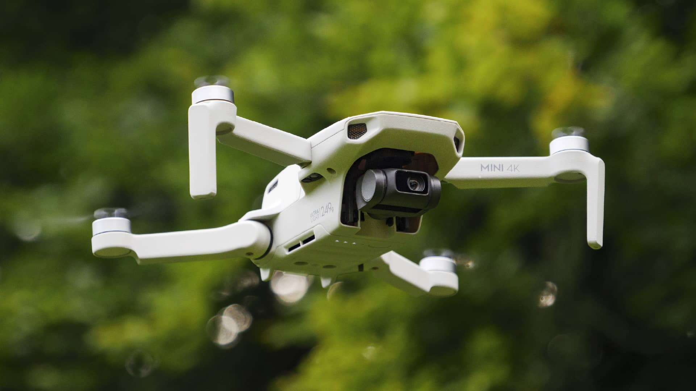

Reseña
Potensic Atom 2 en la práctica
Mi experiencia con este dron sub-250g. Cómo se comporta su estabilización 4K frente a vientos de nivel 5 y configuraciones ideales de cámara para obtener tomas cinemáticas.
Publicado el 15 Oct · Por Cristian